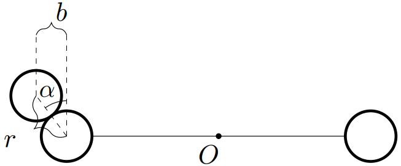
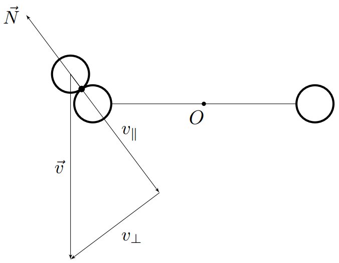
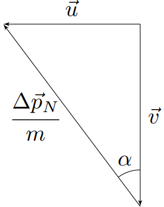
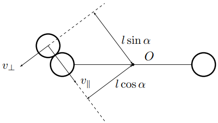

X23 (2023) — English translation
The moment of inertia of each sphere relative to the axis of rotation is $ml^2$, since their dimensions can be neglected. The original rod is equivalent to two others with mass $2m$ and length $l$. The moment of inertia of a rod with mass $M$ and length $L$ relative to the axis passing perpendicular to the rod through its end is equal to: $$I_\text{sт}=\cfrac{ML^2}{3} $$ Then moment of inertia $I$ of the system relative to the axis of rotation is equal to:
Let's use the laws of conservation of energy and angular momentum relative to the axis of rotation: $$\begin{cases} E=\cfrac{mv^2}{2}+\cfrac{I\omega^2_i}{2}=\cfrac{mu^2}{2}+\cfrac{I\omega^2_{i+1}}{2}\\ L=mvl+I\omega_i=mul+I\omega_{i+1} \end{cases} $$ Here $u$ - velocity налетающего ball/sphereandка ссу после удара, по направлению совпадающая со velocityю $v$. Eliminating from системы $u$: $$u=v-\cfrac{I(\omega_{i+1}-\omega_i)}{ml}\Rightarrow I(\omega^2_{i+1}-\omega^2_i)=v^2-\left(v-\cfrac{I(\omega_{i+1}-\omega_i)}{ml}\right)^2 $$ Сокращая корень $\omega_{i+1}=\omega_i$, we get: $$\omega_{i+1}\left(1+\cfrac{I}{ml^2}\right)+\omega_{i}\left(1-\cfrac{I}{ml^2}\right)=\cfrac{2v}{l} $$ Thus:
Since $\omega_0=0$, we find:
Equating $\omega_{i+1}$ and $\omega_i$, we find:
Hint: Use the variable $\omega'_i=\omega_i-v/l$.
The equation obtained in step $\mathrm{A1}$ is reduced to the following form: $$13\left(\omega_{i+1}-\cfrac{v}{l}\right)=7\left(\omega_i-\cfrac{v}{l}\right) $$ Вводя переменную $\omega'_i=\omega_i-v/l$, we get: $$13\omega'_{i+1}=7\omega'_i $$ Hence: $$\omega'_i=\omega'_1\cdot{\left(\cfrac{7}{13}\right)^{i-1}} $$ Since $\omega_0 =0$, $\omega_1=6v/(13l)$. Then $\omega'_1=-7v/(13l)$, hence : $$\omega'_i=-\cfrac{v}{l}\left(\cfrac{7}{13}\right)^i $$ and finally
Let us note that if we put $\omega_{i+1}=\omega_i$ in the recurrent equation obtained in point $\mathrm{A1}$, then for any values of the moment of inertia $I$ the value will be:
Let $u$ be the speed of the ejected ball immediately after impact. Since it is directed horizontally, immediately after the impact the angular momentum of the ejected ball relative to the axis of rotation is zero. Then the laws of conservation of energy and angular momentum are written as follows: $$\begin{cases} E=\cfrac{mv^2}{2}=\cfrac{I\omega^2_1}{2}+\cfrac{mu^2}{2}\\ L=mvl=I\omega_1 \end{cases} $$
Let us explicitly consider the collision of an ejected ball and a sphere. Let us note that if $\alpha$ is the angle between the line of centers and the vertical, then $k=\sin\alpha$.
Since there is no friction, the force of interaction between them is directed along the line of centers. Then, during the impact, the velocity component of the emitted ball, perpendicular to the line of centers, remains constant and equal to $v_\perp=v\sin\alpha$
Let us use the conservation of the velocity component $v_\perp$. Immediately after the impact, the velocity vector of the ball $\vec{u}$ is equal to: $$\vec{u}=\vec{v}+\cfrac{\Delta{\vec{p}}_N}{m} $$ where $\Delta{\vec{p}}_N$ - momentum силы реакции, действующей на ball/sphereandк со стороны сферы. Since $\Delta{\vec{p}}_N$ направлен вдоль линии центров, from рисунка we find: $$u=v\tan\alpha $$
Substituting the value $u$ into the system of equations from the conservation laws, we obtain: $$v^2=\cfrac{I\omega^2_1}{m}+u^2=\cfrac{I}{m}\left(\cfrac{mvl}{I}\right)^2+v^2\tan^2\alpha\Rightarrow{\tan^2\alpha=1-\cfrac{ml^2}{I}} $$ Taking into account that $\sin\alpha=\frac{\tan\alpha}{\sqrt{1+\tan^2\alpha}}$, we find:



Let us decompose the velocity of the ejected ball into velocity components $v_\parallel$ and $v_\perp$, directed respectively along and perpendicular to the line of centers. The angular momentum of the ball relative to point $O$ is equal to: $$\vec{L}_O=m\big[\vec{v}\times\vec{r}\big]=m\big[\vec{v}_\parallel\times\vec{r}\big]+m\big[\vec{v}_\perp\times\vec{r}\big] $$ На рисунке обозначены плечи скоростей $v_\parallel$ and $v_\perp$ относительно оси вращения, соответственно equalе $l\cos\alpha$ and $l\sin\alpha$.
The speed of the ball immediately after the impact will also be decomposed into $u_\parallel$ and $u_\perp$. Let us choose their directions to be the same as for $v_\parallel$ and $v_\perp$, respectively. Let us write down the laws of conservation of energy and angular momentum relative to the axis of rotation: $$\begin{cases} E=\cfrac{I\omega^2_i}{2}+\cfrac{m(v^2_\parallel+v^2_\perp)}{2}=\cfrac{I\omega^2_{i+1}}{2}+\cfrac{m(u^2_\parallel+u^2_\perp)}{2}\\ L=I\omega_i+mv_\parallel l\cos\alpha+mv_\perp l\sin\alpha=I\omega_{i+1}+mu_\parallel l\cos\alpha+mu_\perp l\sin\alpha \end{cases} $$ Since $v_\perp=u_\perp$, а $v_\parallel=v\cos\alpha$, перепишем систему более компактно: $$\begin{cases} I\omega^2_i+mv^2\cos^2\alpha=I\omega^2_{i+1}+mu^2_\parallel\\ I\omega_i+mvl\cos^2\alpha=I\omega_{i+1}+mu_{\parallel}l\cos\alpha \end{cases} $⟦ 9⟧u_\parallel$: $$u^2_\parallel=v^2\cos^2\alpha-\cfrac{I(\omega^2_{i+1}-\omega^2_i)}{m}=\left(v\cos\alpha-\cfrac{I(\omega_{i+1}-\omega_i)}{ml\cos\alpha}\right)^2 $$ Раскрывая скобки и сокращая множитель $\omega_{i+1}-\omega_i$, получим: $$\cfrac{2v}{l}=\omega_{i+1}\left(1+\cfrac{I}{ml^2\cos^2\alpha}\right)-\omega_i\left(\cfrac{I}{ml^2\cos^2\alpha}-1\right) $$

Since $\omega_0=0$, we find:
Let's introduce the variable $\omega'_i=\omega_i-v/l$ again and get: $$\omega'_{i+1}\left(1+\cfrac{I}{ml^2\cos^2\alpha}\right)=\omega'_i\left(\cfrac{I}{ml^2\cos^2\alpha}-1\right) $$ hence после подстановки $I$: $$\omega'_{i+1}=\omega'_i\left(\cfrac{7+3k^2}{13-3k^2}\right)\Rightarrow \omega'_i=\omega'_1\left(\cfrac{7+3k^2}{13-3k^2}\right)^{i-1} $$ For $\omega'_1$ we have: $$\omega'_1=\omega_1-\cfrac{v}{l}=-\cfrac{v(7+3k^2)}{l(13-3k^2)} $$ Thus: $$\omega'_i=\cfrac{v}{l}\left(\cfrac{7+3k^2}{13-3k^2}\right)^i $$ and finally:
For convenience of solution, let us first find the angular velocity of the system $\omega^\uparrow$ after the first collision with the ball. Substituting $\omega_i=0$ and $\omega_{i+1}=\omega^\uparrow$ into the recurrent equation, we obtain: \[\omega^\uparrow=\frac{2\varepsilon\omega_0}{1+\varepsilon}.\]Time dependences $\omega(t)$ for viscous friction modes can be found, as in the solution to paragraphs C5 and C7. The case of dry friction. The kinetic energy of the rotational motion of the system must be friction losses for half a revolution, i.e.: \[\frac I2\omega^{\uparrow\,2} > \pi\alpha I\implies \alpha < \frac{\omega^{\uparrow\,2}}{2\pi}=\frac{2\varepsilon^2\omega_0^2}{\pi(1+\varepsilon)^2}.\]
The case of dry friction.
The kinetic energy of the rotational motion of the system must be friction losses for half a revolution, i.e.: \[\frac I2\omega^{\uparrow\,2} > \pi\alpha I\implies \alpha < \frac{\omega^{\uparrow\,2}}{2\pi}=\frac{2\varepsilon^2\omega_0^2}{\pi(1+\varepsilon)^2}.\]
The case of linear viscous friction. Since $\omega(t)=\omega^\uparrow e^{-\beta T}$, the maximum angle of rotation of the system after the first collision will be:\[\varphi=\int_0^{+\infty}\omega^\uparrow e^{-\beta t}~\mathrm dt=\frac{\omega^\uparrow}\beta.\]This angle must be greater than $\pi$, therefore:\[\beta < \frac{\omega^\uparrow}{\pi}=\frac{2\varepsilon\omega_0}{\pi(1+\varepsilon)}\]
Since $\omega(t)=\omega^\uparrow e^{-\beta T}$, the maximum angle of rotation of the system after the first collision will be:\[\varphi=\int_0^{+\infty}\omega^\uparrow e^{-\beta t}~\mathrm dt=\frac{\omega^\uparrow}\beta.\]This angle must be greater than $\pi$, therefore:\[\beta < \frac{\omega^\uparrow}{\pi}=\frac{2\varepsilon\omega_0}{\pi(1+\varepsilon)}\]
The case of quadratic viscous friction. Since the integral of the form $\int\frac1x~\mathrm dx$ diverges at $x\to+\infty$, then for any value of $\gamma$ the system can make one revolution in a finite, albeit exponentially large time. Thus, $\gamma$ can be an arbitrary positive quantity.
Since the integral of the form $\int\frac1x~\mathrm dx$ diverges at $x\to+\infty$, then for any value of $\gamma$ the system can make one revolution in a finite, albeit exponentially large time. Thus, $\gamma$ can be an arbitrary positive quantity.
Note: Since in reality, in the limit of low angular velocities, viscous friction transforms into a linear regime, then in reality the value $\gamma$ has an upper limit, but we neglect this here.
Equating the change in the kinetic energy of the system per revolution to friction losses, we have: \[\frac I2\omega^{\uparrow\,2}-\frac I2\omega^{\downarrow\,2}=\pi\alpha I\implies\omega^{\uparrow\,2}-\omega^{\downarrow\,2}=2\pi\alpha.\] Since in the dry friction mode the system moves with constant angular acceleration, the average angular velocity $\overline\omega$ will be equal to the arithmetic average $\omega^\uparrow$ and $\omega^\downarrow$. For convenience, we introduce one more quantity:\[\Delta\omega=\frac{\omega^\uparrow-\omega^\downarrow}2,\]then, adding a recurrent equation, we obtain the following system:\[\left\{\begin{array}l\overline\omega\Delta\omega=\frac{\pi\alpha}2\\\overline\omega+\cfrac{\Delta\omega}\varepsilon=\omega_0\end{array}\right.\implies\overline\omega^2-\omega_0\overline\omega+\frac{\pi\alpha}{2\varepsilon}=0.\]This is a quadratic equation whose roots are:\[\overline\omega_\pm=\frac{\omega_0\pm\sqrt{\omega_0^2-\cfrac{2\pi\alpha}\varepsilon}}{2}.\]From physical considerations it is clear that it is necessary to take a larger root $\overline\omega_+$. So:
The case of linear viscous friction. The equation for the angular velocity between collisions with the ball will be written in the form: \[\dot\omega=-\beta\omega.\] Its solution with the initial condition $\omega(t=0)=\omega^\uparrow$ has the form: \[\frac{\mathrm d\omega}\omega=-\beta~\mathrm dt\implies \omega=Ce^{-\beta t},~\omega(t=0)=C=\omega^\uparrow\implies\omega(t)=\omega^\uparrow e^{-\beta t}.\] Then the time $T$ of the next collision with the ball will be determined from the condition: \[\pi=\int_0^T\omega(t)~\mathrm dt=\int_0^T\omega^\uparrow e^{-\beta t}~\mathrm dt=\frac1\beta\left(1-e^{-\beta T}\right)\omega^\uparrow.\] Since the angular velocity of the system $\omega^\downarrow$ immediately before the collision with the ball is equal to: \[\omega^\downarrow=\omega^\uparrow e^{-\beta T},\] then we have in result:\[\omega^\uparrow-\omega^\downarrow=\pi\beta.\]Substituting this into the recurrence equation, we get:\[\omega^\uparrow\left(1+\varepsilon^{-1}\right)+\left(\omega^\uparrow-\pi\beta\right)\left(1-\varepsilon^{-1}\right)=2\omega_0\implies\omega^\uparrow=\omega_0-\frac{\pi\beta}2\left(\varepsilon^{-1}-1\right).\]
The equation for the angular velocity between collisions with the ball will be written in the form: \[\dot\omega=-\beta\omega.\] Its solution with the initial condition $\omega(t=0)=\omega^\uparrow$ has the form: \[\frac{\mathrm d\omega}\omega=-\beta~\mathrm dt\implies \omega=Ce^{-\beta t},~\omega(t=0)=C=\omega^\uparrow\implies\omega(t)=\omega^\uparrow e^{-\beta t}.\] Then the time $T$ of the next collision with the ball will be determined from the condition: \[\pi=\int_0^T\omega(t)~\mathrm dt=\int_0^T\omega^\uparrow e^{-\beta t}~\mathrm dt=\frac1\beta\left(1-e^{-\beta T}\right)\omega^\uparrow.\] Since the angular velocity of the system $\omega^\downarrow$ immediately before the collision with the ball is equal to: \[\omega^\downarrow=\omega^\uparrow e^{-\beta T},\] then we have in result:\[\omega^\uparrow-\omega^\downarrow=\pi\beta.\]Substituting this into the recurrence equation, we get:\[\omega^\uparrow\left(1+\varepsilon^{-1}\right)+\left(\omega^\uparrow-\pi\beta\right)\left(1-\varepsilon^{-1}\right)=2\omega_0\implies\omega^\uparrow=\omega_0-\frac{\pi\beta}2\left(\varepsilon^{-1}-1\right).\]
From the results obtained in the previous paragraph, the exact value of the average angular velocity is: \[\overline\omega_2=\frac{\pi}T=\frac{\pi\beta}{-\ln\left(1-\frac{\pi\beta}{\omega^\uparrow}\right)}=\frac{\pi\beta}{\ln\left(2\varepsilon\omega_0-\pi\beta(1-\varepsilon)\right)-\ln\left(2\varepsilon\omega_0-\pi\beta(1+\varepsilon)\right)}.\]
The case of quadratic viscous friction. The equation for the angular velocity between collisions with the ball will be written in the form:\[\dot\omega=-\gamma\omega^2.\]Its solution with the initial condition $\omega(t=0)=\omega^\uparrow$ has the form:\[\frac{\mathrm d\omega}{\omega^2}=-\gamma~\mathrm dt\implies\frac1\omega=\gamma t+C,~\omega(t=0)=\frac1C=\omega^\uparrow\implies\omega(t)=\frac1{\gamma t+\frac1{\omega^\uparrow}}=\frac{\omega^\uparrow}{1+\gamma\omega^\uparrow t}.\]Then the time $T$ of the next collision with the ball will be determined from the condition:\[\pi=\int_0^T\omega(t)~\mathrm dt=\int_0^T\frac{\omega^\uparrow}{1+\gamma\omega^\uparrow t}~\mathrm dt=\frac1\gamma\ln\left(1+\gamma\omega^\uparrow T\right)\implies T=\frac{e^{\pi\gamma}-1}{\gamma\omega^\uparrow}.\]The angular velocity of the system $\omega^\downarrow$ immediately before the collision with the ball will be:\[\omega^\downarrow=\omega(T)=\omega^\uparrow e^{-\pi\gamma}.\]Substituting this in recurrent equation, we have:\[\omega^\uparrow\left(1+\varepsilon^{-1}\right)+\omega^\uparrow e^{-\pi\gamma}\left(1-\varepsilon^{-1}\right)=2\omega_0\implies\omega^\uparrow=\frac{2\omega_0\varepsilon}{1-e^{-\pi\gamma}+\varepsilon\left(1+e^{-\pi\gamma}\right)}.\]
The equation for the angular velocity between collisions with the ball will be written in the form:\[\dot\omega=-\gamma\omega^2.\]Its solution with the initial condition $\omega(t=0)=\omega^\uparrow$ has the form:\[\frac{\mathrm d\omega}{\omega^2}=-\gamma~\mathrm dt\implies\frac1\omega=\gamma t+C,~\omega(t=0)=\frac1C=\omega^\uparrow\implies\omega(t)=\frac1{\gamma t+\frac1{\omega^\uparrow}}=\frac{\omega^\uparrow}{1+\gamma\omega^\uparrow t}.\]Then the time $T$ of the next collision with the ball will be determined from the condition:\[\pi=\int_0^T\omega(t)~\mathrm dt=\int_0^T\frac{\omega^\uparrow}{1+\gamma\omega^\uparrow t}~\mathrm dt=\frac1\gamma\ln\left(1+\gamma\omega^\uparrow T\right)\implies T=\frac{e^{\pi\gamma}-1}{\gamma\omega^\uparrow}.\]The angular velocity of the system $\omega^\downarrow$ immediately before the collision with the ball will be:\[\omega^\downarrow=\omega(T)=\omega^\uparrow e^{-\pi\gamma}.\]Substituting this in recurrent equation, we have:\[\omega^\uparrow\left(1+\varepsilon^{-1}\right)+\omega^\uparrow e^{-\pi\gamma}\left(1-\varepsilon^{-1}\right)=2\omega_0\implies\omega^\uparrow=\frac{2\omega_0\varepsilon}{1-e^{-\pi\gamma}+\varepsilon\left(1+e^{-\pi\gamma}\right)}.\]
From the results obtained in the previous paragraph, the exact value of the average angular velocity is: \[\overline\omega_3=\frac{\pi}T=\frac{\pi\gamma\omega^\uparrow}{e^{\pi\gamma}-1}=\frac{\pi\varepsilon\gamma\omega_0}{2\operatorname{sh}\frac{\pi\gamma}2\left(\operatorname{sh}\frac{\pi\gamma}2+\varepsilon\operatorname{ch}\frac{\pi\gamma}2\right)}.\]